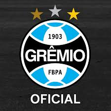

Seção Principal
O Grêmio Foot-Ball Porto Alegrense, mais conhecido como Grêmio, é um clube de futebol profissional brasileiro sediado em Porto Alegre, no Rio Grande do Sul. Fundado em 15 de setembro de 1903, é considerado um dos maiores e mais tradicionais clubes do Brasil e da América do Sul. Suas cores são: azul, preto e branco.
Arena/Estádio: Arena do Grêmio
Fundação: 15 de setembro de 1903
Localização: Porto Alegre, Rio Grande do Sul
Campeonatos: Brasileirão Série A, Copa do Brasil, Campeonato Gaúcho de Futebol
Alcunhas: Imortal Tricolor; Tricolor dos Pampas; Rei de Copas; Clube de Todos
Capacidade: 60.540 torcedores
Mascote: Mosqueteiro; Flecha Negra
Visite o Site Oficial